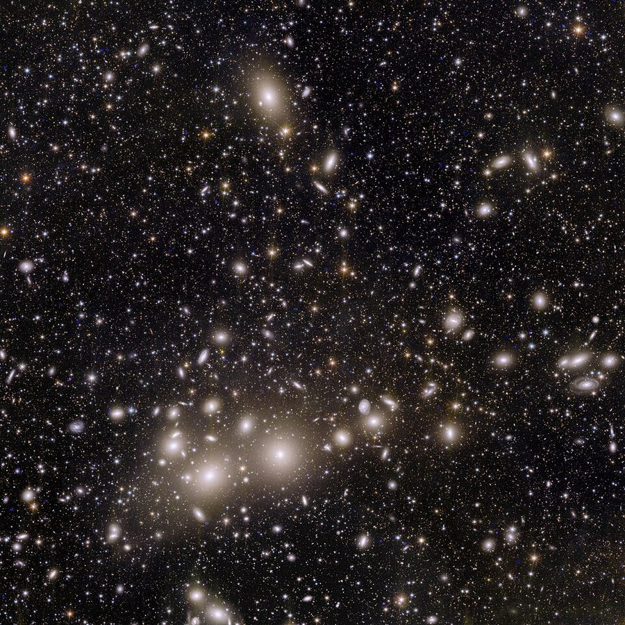

Машина · главное
Индекс, который решает, что вы найдёте
Проект World Product Graph задуман как свод описаний всего, что продаётся в интернете. Кому принадлежит такой индекс, тот решает и что покажут человеку, и что предложат его агенту.
Тринадцатого ноября Reuters узнал о внутреннем документе Amazon, в котором описан проект World Product Graph — свод данных о каждом товаре, который где-либо продаётся в интернете. Не только о том, что Amazon продаёт сам: о любом.
Замысел простой и слегка хищный. Покупатель не должен уходить с Amazon, чтобы выяснить, какая именно кастрюля ему нужна, — а сегодня он уходит, в Reddit и в поиск. И то же самое должен перестать делать его ИИ-агент: если у Amazon окажется самый большой в мире склад описаний товаров, агенты начнут опираться на этот склад, а человек, покупающий через бота, всё равно окажется на страницах Amazon.
Механика уже началась, просто по частям. С прошлого года в карточках живёт функция shop direct — ссылки на товары сторонних продавцов. Есть и собственный ИИ-консультант Alexa for Shopping, который до переименования звался Rufus.
Внутренний документ, по данным Reuters, проблему признаёт прямо: «Многие ответы Rufus фактически неверны или неполны», а прогонять пользовательские запросы через ИИ дорого. Лекарство — данные: чем больше товаров описано, тем точнее ответ и тем дешевле можно взять модель.
Слабое место — исполнение. По словам Reuters, документ ставит проект в зависимость от того, «как бренды организуют товары на своих сайтах»; не исключено, что чужие витрины придётся обходить пауком. Срок, который стоит в документе, — первое октября 2027 года.
Amazon отреагировал так: «Черновые, устаревшие документы часто дают неполную картину, и существование такого наброска не обязательно отражает наши текущие планы». Формально это не опровержение — это отказ подтверждать.
Деталь, которая делает историю историей: в этом году Amazon закрыл доступ ИИ-агенту Muse от Meta. Компания, которая хочет быть каталогом всего, отдельно решает, кому можно читать её собственный каталог, — и это самое честное, что есть в проекте.
Практический вывод для автора и издателя короткий. Если покупки поедут через такой индекс, решает не ваша витрина, а ваши метаданные: название, категория, ISBN, наличие, цена. Тот, кто описан в чужом каталоге, продаётся независимо от того, есть ли у него свой сайт.
Коротко
- ПроектWorld Product Graph — свод данных о товарах со всего интернета, включая чужие (Reuters, внутренний документ Amazon)
- Срок в документерелиз 1 октября 2027 года; компания его не подтверждает
- Признанная проблема«многие ответы Rufus фактически неверны или неполны», ИИ-поиск дорог
- Уже работаетshop direct — ссылки на товары сторонних продавцов; Alexa for Shopping (ранее Rufus)
- Позиция Amazonдокумент черновой и устаревший, «не обязательно отражает наши текущие планы»
Что здесь факт, а что — обещание
Факт: существование внутреннего документа, цитата про ответы Rufus, дата 1 октября 2027 года, работающая функция shop direct и блокировка агента Muse — это публикация Reuters в пересказе The Verge. Всё проверяемо по ссылкам, кроме самого документа: его никто, кроме Reuters, не видел.
Обещание: что проект вообще выйдет и что товары всего интернета окажутся в одном индексе. Amazon называет документ черновым; бюджета, команды и партнёров не называет никто.
Обещание: что ИИ-агенты будут ходить именно к Amazon. Это цель из документа, а не измеренный результат: сегодня крупные площадки агентов, наоборот, блокируют.
Вне номера: качество ответов Alexa for Shopping мы не проверяли — это утверждение из внутреннего документа, а не тест.
Инструментарий
Второй материал · 6 минутСоветчик в двадцати двух центрах
FAA распространила ИИ-систему SMART на всю воздушную зону США. Авиакомпании хвалят, диспетчеры узнали о ней из прессы: профсоюз не участвовал ни в проектировании, ни в испытаниях.
Десятого ноября Федеральное управление гражданской авиации США объявило, что система SMART, которая советует диспетчерам, как рассадить поток самолётов, теперь работает во всех двадцати двух центрах управления воздушным движением страны. Формулировка ведомства: «сократить задержки, снизить расход топлива и улучшить впечатление летающей публики».
Цифры, на которые опирается FAA, такие. Система стоит 875 миллионов долларов. С 21 сентября, когда её включили в воздушном пространстве Вашингтона, она помогла перенаправить 180 рейсов, и агентство оценивает это в среднем в десять минут и почти 80 галлонов топлива на рейс.
Что делает SMART: облачная система сводит вместе погоду, маршруты, поток и данные об укомплектованности диспетчерских смен, предсказывает загрузку секторов, предлагает маршруты и порядок захода на посадку. Решение остаётся за человеком: рекомендации проверяет команда специалистов FAA в Вашингтоне, а местные диспетчеры вправе их не принять. Заменить диспетчера система не может — это сказано в объявлении от 21 сентября.
Авиакомпании поддержали раскатку: в сентябрьском пресс-релизе стояли цитаты исполнительного директора Delta Эда Бастиана и исполнительного директора American Роберта Айсома. А вот National Air Traffic Controllers Association, в которой больше пятнадцати тысяч человек, узнала о системе не от заказчика: профсоюз сообщил журналу Flying, что не участвовал «в проектировании, испытаниях или внедрении SMART и поэтому не может судить о её влиянии на работу диспетчеров».
Деталь, которая показывает, как мало пока известно: в пример FAA приводит грузовой рейс, которому SMART предложила более короткий и быстрый маршрут на подходе к Далласу. Названия рейса агентство не раскрыло, и о том, помогла ли система пассажирским бортам, данных нет.
Редакционный вывод: искусственный интеллект вошёл в контур безопасности полётов — но вошёл как советник с правом совещательного голоса и обязательной человеческой проверкой. Это ровно та роль, которую в 2026 году почти нигде не описывают честно, потому что она не даёт красивой цифры. Цифра «десять минут на рейс» посчитана самим агентством по 180 рейсам за месяц и никем не перепроверена.
Небо
Заметка · 4 минутыТринадцать месяцев неба
ESA выложила первый большой релиз Euclid: тринадцать месяцев наблюдений, больше миллиарда объектов, 900 миллионов галактик и крупнейший каталог сильных гравитационных линз — больше, чем все прежние вместе.

Двенадцатого ноября ESA открыла первый большой архив Euclid — релиз под именем DR1-Foundation. Тринадцать месяцев наблюдений, участок неба площадью около 9500 полных Лун, 1900 квадратных градусов и 1,7 миллиона гигабайт данных.
Внутри: больше миллиарда объектов, свыше 900 миллионов галактик, порядка 15 тысяч кандидатов в сильные гравитационные линзы, больше 60 миллионов кандидатов в квазары и спектры более чем 160 миллионов источников. «Это смена масштаба, — говорит научный руководитель проекта Валерия Петторино. — Раньше мы выдавали несколько дней наблюдений на 60 квадратных градусах».
Главная ценность — в линзах. Сильная гравитационная линза получается, когда свет далёкой галактики заметно искривляется массой передней; штука редкая, а нужна, чтобы «взвешивать» галактики вместе с их невидимой тёмной материей. Каталог этого релиза больше всех предыдущих, вместе взятых. «Больше десяти лет назад мы предсказывали, что Euclid перевернёт поиск линз, — говорит Натали Лайнс из Портсмутского университета. — Этот день настал».
Работать с этим будут годами. Сейчас данные покрывают около 14% площади, которую Euclid должен отснять; полный релиз DR1 обещан к середине 2027 года, с данными по слабому линзированию и привязкой галактик к космической сети. Самая заметная картинка релиза — мозаика на 500 гигапикселей.
Редакционный вывод: это редкий случай, когда наука отдаёт не результат, а сырьё. Каталог галактик — то же, чем Amazon хочет стать для товаров, только без покупателя: миллиард объектов, разложенных по полкам, чтобы кто-то другой нашёл в них структуру.
Тело
Заметка · 4 минутыЗа пять лет до первого забывания
Энторинальная кора и миндалина теряют ткань раньше гиппокампа, который обычно ищут на снимках при подозрении на Альцгеймера. По оценке авторов, эти изменения видны за пять–десять лет до симптомов.
«У нас есть ранние изменения в мозге, которые проявляются клиническими биомаркёрами атрофии за десять лет до клинических симптомов, — говорит Майкл Миллер, биомедицинский инженер и старший автор работы. — Как минимум пять–десять лет ваш мозг меняется. Представьте, что мы начнём лечить на втором, третьем, четвёртом году, а не через пятнадцать лет, когда изменения уже вылезли в память».
Работа Джонса Хопкинса искала не «где вообще атрофия», а «где она начинается». Исследователи просмотрели сотни снимков МРТ и ПЭТ из двух независимых проектов — Alzheimer's Disease Neuroimaging Initiative и Biomarkers of Cognitive Decline Among Normal Individuals — и в обеих выборках увидели одну картину: энторинальная кора и миндалина теряют ткань раньше и относительно больше, чем гиппокамп.
Это неожиданно, потому что гиппокамп — привычная точка, куда смотрит врач. Энторинальная кора отвечает за извлечение уже сохранённых воспоминаний, миндалина — за эмоциональную память. Обе лежат рядом с гиппокампом и, судя по снимкам, начинают сдавать первыми.
Вторая часть работы связывает усадку с тау-белком: области истончения серого вещества совпали с зонами тау-изменений по данным ПЭТ и цифровой патологии. Именно это делает две области кандидатами в биомаркёры, а не просто любопытной анатомией.
Оговорка обязательна. Клинического теста пока нет: работа показывает ранние признаки, но не даёт способа предсказать болезнь за десять лет. Авторы предлагают и более далёкую перспективу — смотреть эти области у людей с наследственностью уже в тридцать-сорок лет, по мере того как МРТ дешевеет. «Зная, у кого будет когнитивное снижение, можно лечить раньше и раньше», — говорит соавтор Миган Моррис.
Экран
Заметка · 3 минутыСорок пять лет вперёд
Стив Майнер, снявший вторую и третью части «Пятницы, 13-е», вернётся к серии спустя более чем сорок лет. Продюсер называет новый фильм началом «вселенной Джейсона», рассчитанной на следующие сорок пять лет.
В пятницу, тринадцатого, стало известно сразу две вещи. Первая: будет новый фильм «Пятница, 13-е» — тринадцатый по счёту, если считать по формальным признакам. Вторая: снимать его будет Стив Майнер, который в 1981 и 1982 годах сделал вторую и третью части и с тех пор к серии не возвращался.
Продюсер Робби Барсамян в интервью TheWrap говорит большими блоками: это «определённо первый из многих новых фильмов», у проекта есть «соединительная ткань», а сам он теперь ведёт «вселенную Джейсона» целиком — сериал, игры, мерч, фан-опыт и кино. Про Майнера формулировка такая: он «не просто оглядывался назад — он смотрел вперёд» и пришёл перезапускать франшизу «на следующие сорок пять лет».
Из конкретного — обещание вернуться к практическим эффектам, «изобретательным убийствам» и «классической энергии слэшера», плюс персонажи, которым хочется выжить. Релиз — где-то в 2027 году.
Редакционный вывод: подтверждён здесь ровно один факт — Майнер у руля. Всё остальное («вселенная», «сорок пять лет», «подняли планку») — слова продюсера, а франшиза до этого стояла много лет из-за споров о правах. Сорок пять лет — это не план, это тост.
Книги
Заметка · 3 минутыПять сеансов на тысячу страниц
Журнал Equator собирает клуб «Into the Abyss»: «2666» Роберто Болањо разбивают на пять встреч по 150 страниц — с Рэйчел Кушнер, Карлом Уве Кнаусгором и переводчицей Наташей Уиммер.
Читать «2666» в одиночку — предприятие, которое чаще начинают, чем заканчивают. Последний роман Роберто Болањо вышел посмертно, в нём около тысячи страниц, и он знаменит тем, что раздражает примерно так же часто, как вознаграждает: «единые предложения тянутся… одержимо перебирая мельчайшие градации», — писал обозреватель New York Сэм Андерсон, называя книгу «бесспорно блестящей» и одновременно «переполненной, жестокой, плотной».
Поэтому журнал Equator, у которого летом был клуб по «Поздневикторианским холокостам» Майка Дэвиса, берётся за второй заход — под названием «Into the Abyss». Пять онлайн-встреч, книга делится на куски по 150 страниц, между встречами — модераторы из числа исследователей и гостей.
Список гостей неожиданно серьёзный: Рэйчел Кушнер, Карл Уве Кнаусгор, Бенджамин Кункель, Панкадж Мишра и Наташа Уиммер — та самая переводчица Болањо на английский. Темы обещаны соответствующие: насилие, литературная одержимость, пограничье и «обломки двадцатого века».
Участие — для подписчиков Equator, по схеме pay-what-you-can, целиком онлайн. Редакционный вывод: это не новость о книге, а новость о читателе. Книга на тысячу страниц держится не на интриге, а на выносливости, и клуб — честная попытка сделать выносливость общей. Автору, который пишет сто семьдесят пять тысяч слов, полезно помнить: терпение читателя — такой же параметр конструкции, как главы и ритм.